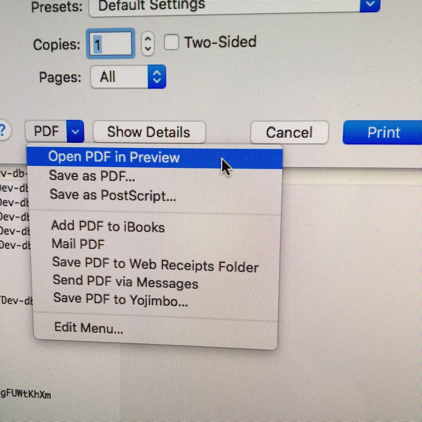
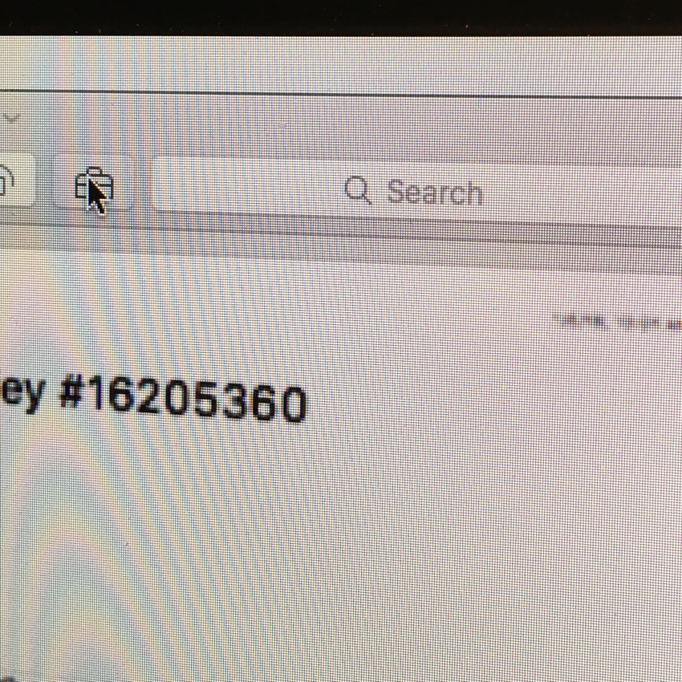
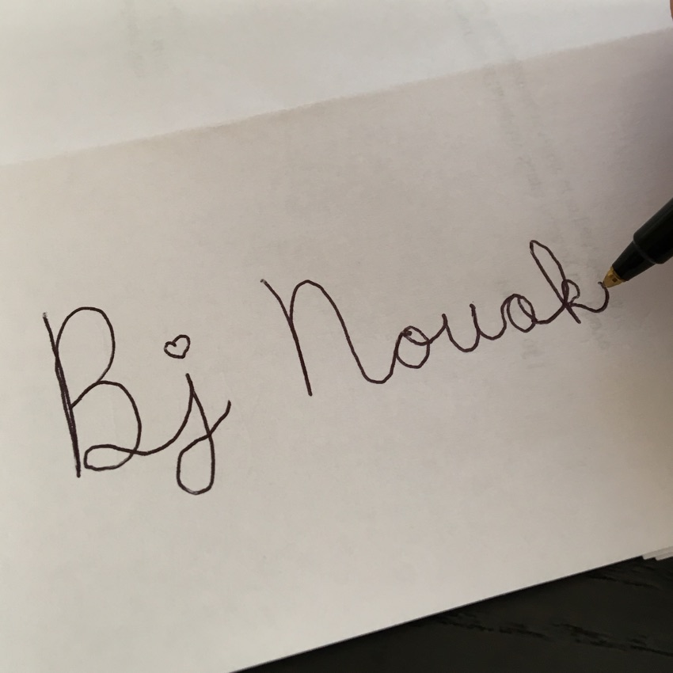
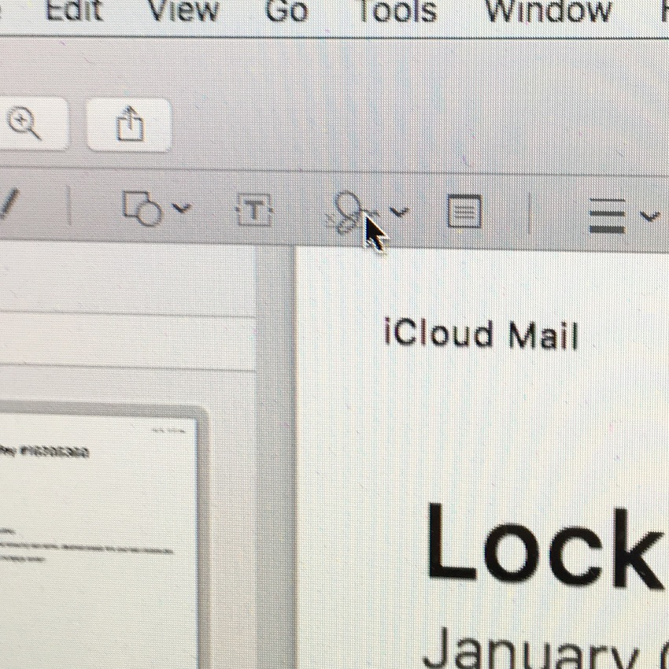
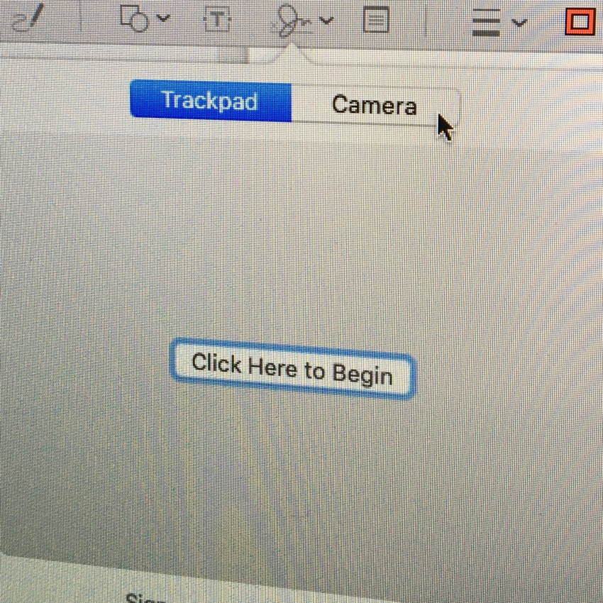
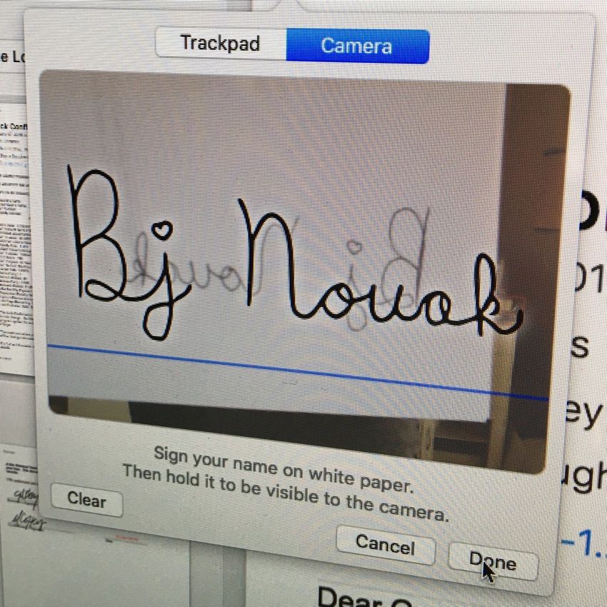
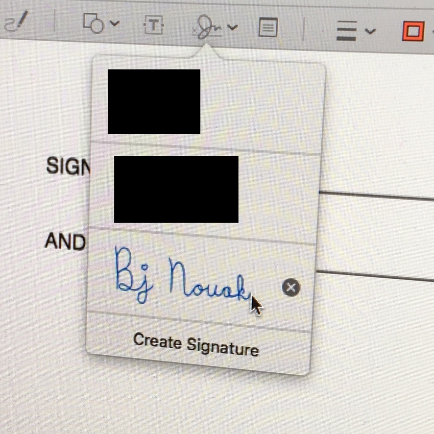
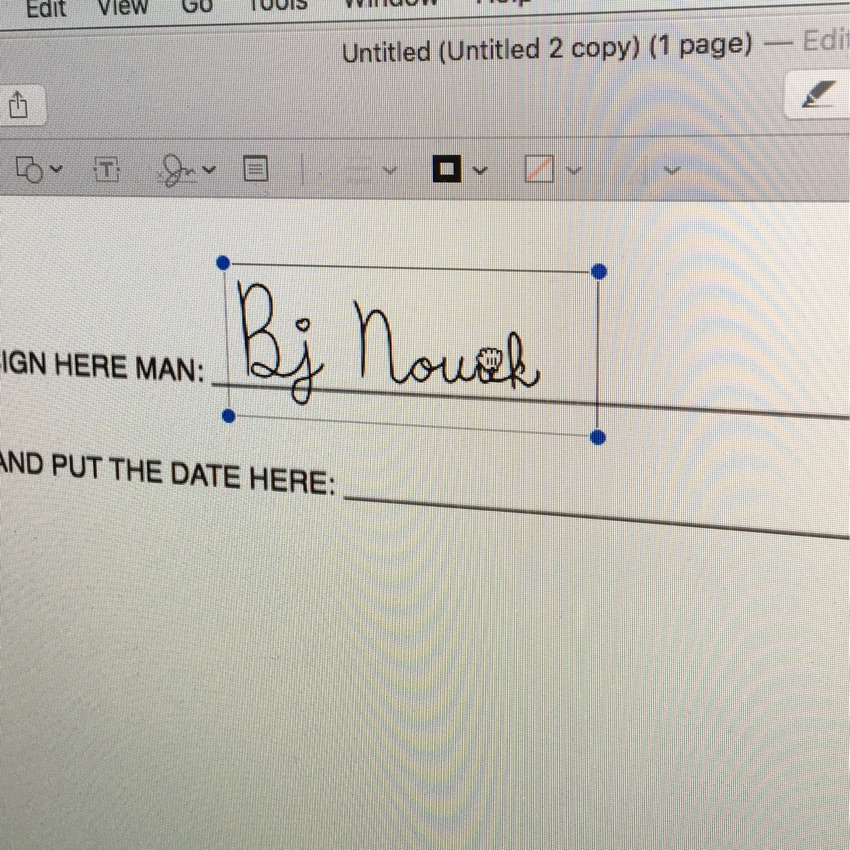
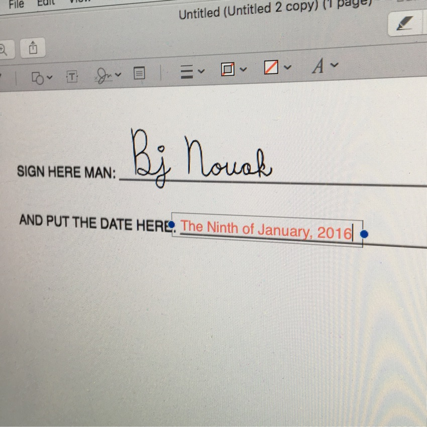
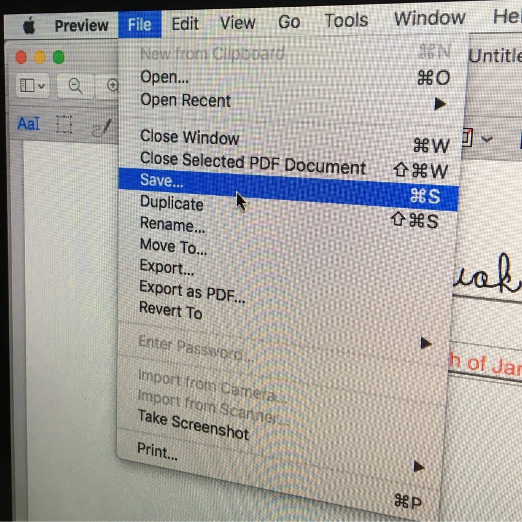

PRO TIP: HOW TO QUICKLY AND EASILY SIGN DOCUMENTS ON YOUR MAC
So you’re refinancing your house, filling out college paperwork, signing a lease, starting a new job…and they emailed you stuff to sign. Ugh, right? Print, sign, scan or photograph or fax. 😷 If you have a Mac, Apple has you covered. But sadly nobody seems to know it’s there. THAT’S WHERE I COME IN.
-

Start with a PDF.
Usually they will send you a PDF. If that's the case just open it. But sometimes I get Word documents or other weird stuff instead. If this is the case, open the document, choose File -> Print, click "PDF" and choose "Open PDF in Preview".
-

Show the Markup Toolbar.
Click the little toolbox icon in the toolbar or, from the menus, choose View -> Show Markup Toolbar.
-

Using a black pen, sign a clean white blank piece of paper.
You'll use this to capture your signature for future use on documents.
-

Click the Signature icon in the toolbar and choose "Create Signature".
Preview remembers your signature so you only need to do this part once.
-

If you have the choice of "Trackpad" and "Camera" at the top, choose "Camera".
You can sign with your laptop trackpad if you want but I think it's easier to capture a real signature with the camera instead.
-

Hold your signature up to the camera on your computer. When the app "registers" it you'll see an outline representation. If it looks good click Done.
This can be a little tricky but for the most part it is like magic. Just move the paper around until the signature is fully in the frame and semi-close to the line and it should pick it up.
-

Click the Signature icon in the markup toolbar again and choose your new signature.
When you choose the signature, a version of it will appear on the document just floating in the wrong place. (I'm artfully hiding my and my wife's signatures here but as you can see you can capture and reuse multiple.)
-

Drag the signature onto the signature line on the document.
You can also resize if needed by dragging the little blue handles.
-

Bonus: Fill out the rest of the form.
The markup toolbar can do all kinds of other things including fill in blanks. Just click the "Aa|" icon, click on anything in the form that looks like a blank or a box, and start typing.
-

Save.
Choose File -> Save... (Or press command-S) to save your signed document and then email it back.
-
💅🏽 Once you've done this one time it is super easy to do over and over. Just open the PDF, click your signature, drop it in place, save, and return the file.
This feature has been hiding on your computer for several years. Enjoy!